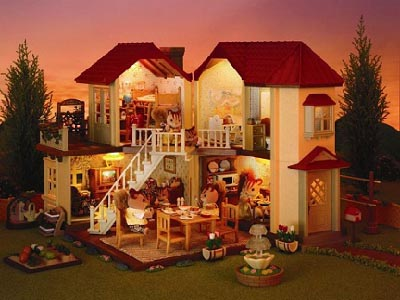

About Sylvanian Family

These fun little toy sets were first introduced by a company in Japan called, Epoch. Epoch fist launched in 1987. With the aim to combine anthropomorphic animal figurines, and dollhouse playsets. While these critters orginated in Japan they later launched the same year in North America. While they faced huge success overseas, even winning Toy of the Year" three times in a row, in 1987, 1988, and 1989. Facing their success, in 1993 the US and Canada distributer Tomy lost rights to the Sylvanian Family name. Because of this we more commonly know them as Calico Critters.
- The toyline was originally titled Pleasant Friends of the Forest Epoch System Collection Animal Toy Sylvanian Families (森のゆかいな仲間たち エポック社 システム・コレクション・アニマルトーイ・シルバニアファミリー, Mori noyu kaina nakama-tachi Epokkusha shisutemu korekushon animarutōi shirubania famirī), but was changed to its current name. "Sylvanian" means "of the forest", from the Roman god Silvanus.
- The entire franchise is set in Sylvania (シルバニア, Shirubania), a fictional village somewhere in North America, later revised to Great Nature.
Fall of the Family
While the critters showed huge success in thier begining years, by the end of the 1990's Sylvanian Families had been discontinued. Along with this Sylvanian Families had other declines:
- Tomy stopped selling Calico Critters, but a new company, International Playthings, now called Epoch Everlasting Play, picked up the line.
- In 1999, the toyline celebrated its 15th anniversary in Japan, with the opening of the themed restaurant Sylvanian Forest Kitchen (シルバニア森のキッチン, Shirubania mori no kitchin), which was operated and managed by Epoch. The restaurant not only served food, but also sold merchandise and toys based on the franchise. The restaurant closed in February 2011.
- A Sylvanian Family showed closed in London around April 2023
Where Was the restaurant located?
The Sylvanian Families Resturant was located in Finsbury Park, London. Which has sadly closed in Feburary 2011.
Endymion Rd, Finsbury Park,London N4 1EE, United Kingdom
T: +44 20-8489-1000